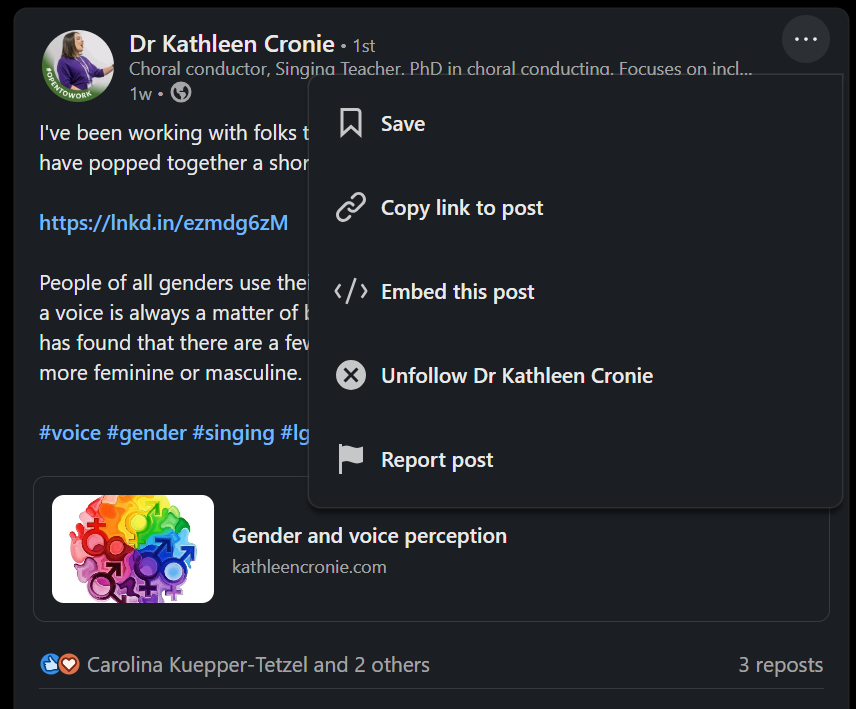

3 LinkedIn Basics
This chapter covers setting up your profile and understanding how LinkedIn works. If you already have an established presence, skip ahead. If you are starting fresh or have a neglected profile from 2015, read on.
3.1 Setting Up Your Profile
Your profile is your landing page. When someone sees your post or comment, they will click through to your profile to decide whether to follow you or connect so it’s worth taking the time to make it reflect why you’re on LinkedIn.
3.1.1 Your headline
You get 220 characters. Use them to say what you actually do, not just your job title. The headline appears in search results, next to your comments, and when you appear in someone’s feed so it should tell people what you do and why they might want to follow you.
3.1.2 Your About section
This is your chance to say who you are in your own words. Write in first person. Be specific about your work and interests. Include enough personality that you sound like a human being.
Here is mine as an example:
About I am Associate Dean for Learning and Teaching and Professor of Evidence-Informed Education at the University of Glasgow. My research predominantly focuses on lecture capture, how it can be used as an effective study tool by students and the impact on students from widening participation backgrounds as well as those with disabilities and neurodivergent conditions. In all my work, I draw on theories of learning from cognitive science and self-regulation, as well as theories of belonging and self-efficacy.
My leadership roles have centred around supporting those on the learning, teaching, and scholarship track. I am currently lead of the College of MVLS LTS Network and previously founded and led the Pedagogy and Education Research Unit in the School of Psychology and Neuroscience.
I am based in the School of Psychology and Neuroscience. My teaching is varied although centres on cognitive psychology and beginner data skills in R and I am a vocal advocate of open science and open educational resources where as a member of the PsyTeachR team I have authored several open-access data skills books and tutorials.
When I am not at work I like to climb mountains, do stand-up comedy, and play videogames.
Also, super gay.
3.1.4 The rest
LinkedIn has a lot of other profile sections - as an academic I would recommend using the Experience section to list your academic positions and Education to state your degrees and which institutions you have attended. The rest (Featured posts, Skills, Awards, Publications etc.) is up to you and I think these have diminishing returns for the effort they take.
3.2 Enabling Followers
By default, LinkedIn emphasises connections (mutual relationships). But you can also enable a “Follow” option so people can see your content without you accepting a connection request.
To enable this: Settings > Visibility > Followers > Make follow primary. This means the default button on your profile becomes “Follow” rather than “Connect.” People can still connect if they click through, but following becomes the easier option.
This is useful if you want a broader audience. Connections have a limit (30,000) but followers do not. There is also evidence that LinkedIn’s algorithm now favours followers over connections for content distribution, with approximately 10-15% of connections seeing a typical post compared to 25-30% of followers.
3.3 Understanding the Feed
3.3.1 How the algorithm works
LinkedIn uses an algorithm to determine what appears in your feed. You will not see everything from everyone you follow. The algorithm prioritises content it predicts you will engage with, based on your past behaviour, the content’s early performance, and various other factors that LinkedIn does not fully disclose.
Unlike Twitter, where academic researchers extensively studied how the platform works, there is relatively little peer-reviewed research on LinkedIn’s algorithm specifically. Most of what we know comes from industry analyses rather than controlled studies. That said, here is what seems to matter based on available evidence:
Early engagement. According to Algorithm Insights 2025 research, the first 30-60 minutes after posting are crucial. Posts that get likes and especially comments during this window tend to be shown more widely. Hootsuite’s analysis confirms that posts getting strong interaction in the first hour are shown to second and third-degree connections more frequently. This is why posting when your audience is active matters and you can schedule your posts if you’re not available during these times.
Comments over likes. Multiple analyses suggest comments signal higher engagement than reactions. One industry report suggests comments may be weighted up to 15 times more than likes, while another citing LinkedIn’s own Transparency Report suggests meaningful comments contribute up to 5 times more to reach than reactions.
Dwell time. How long people spend reading your post matters. Hootsuite notes that LinkedIn places increasing weight on dwell time, meaning posts that keep users engaged for longer see better distribution. Content that people actually read (not just scroll past) gets favoured.
Original content. There is reasonable evidence that reposts get less engagement than original posts. Analysis from multiple sources suggests reposted content may receive around 85% less engagement than original content following algorithm changes in 2024, and that heavy reposting can drag down your overall metrics. If you want to share someone else’s content, writing your own post that references or builds on their work typically performs better than using the repost button.
Links. Single external links in posts appear to reduce reach, possibly because LinkedIn wants to keep users on the platform. One analysis suggests posts with external links without sufficient context receive 83% less distribution, while another suggests roughly 30% reduction. The evidence is mixed, but many people now put links in the first comment rather than the post itself. Whether this actually helps is unclear, but it has become a common practice.
Engagement bait is penalised. The algorithm now recognises patterns like “Comment YES if you agree!” and may flag them as low-quality or spam. Ask genuine questions that invite real discussion rather than fishing for empty engagement.
AI-generated content may perform worse. Some analyses suggest posts with recognisable AI patterns achieve significantly less organic reach. Whether this is algorithmic detection or simply that AI content tends to be less engaging is unclear, but authentic human-written content appears to perform better.
That all said, don’t obsess over the algorithm - it will change, the evidence is mostly anecdotal, and being an interesting person who posts stuff people want to engage with matters more than gaming the system. But it helps to understand the basics.
3.3.2 Saving posts [bookmarks]
An annoying feature of LinkedIn is that in algorithmic view, it can sometimes be hard to find a post you have previously seen, unless you remember exactly who posted it. This is particularly annoying when the page refreshes without you asking it to. You can save posts by clicking the three dots at the top of the post then “Save”.

You can access your saved posts on the desktop by navigating to your home page and then in the left hand menu bar towards the bottom, click Saved items. On mobile, you just hit your profile picture and Saved posts is one of the items that comes up in the menu bar.
3.3.3 Switching to chronological
By default, LinkedIn shows you an algorithmic feed. You can switch to chronological order if you prefer to see posts in the order they were posted.
On desktop: look for the feed sorting option near the top of your feed and select “Recent.” On mobile: tap your profile picture, then Settings > Account preferences > Preferred feed view and select “Most recent.”
Note that LinkedIn tends to reset this to algorithmic periodically, so you may need to switch it back.
3.4 Taming Notifications and Emails
LinkedIn’s default notification settings are aggressive. If you do not adjust them, you will receive emails about everything: who viewed your profile, job anniversaries, suggested posts, people you might know, and endless other noise. It will bury anything actually useful.
Go to Settings > Notificationsand work through each section. Turn off most email notifications. Keep notifications for direct messages and comments on your posts. Turn off “news and updates,” “job opportunities” (unless you are job hunting), and most of the “network” notifications.
On mobile, go to your notification settings and adjust what generates push notifications. You probably do not need to know immediately when someone views your profile.
This is not optional. The default settings will make you hate LinkedIn. Fix them before you do anything else.
3.5 Interacting with Content
3.5.1 Reactions
LinkedIn offers several reaction options: Like, Celebrate, Support, Love, Insightful, Funny. For most purposes, just use Like. The others exist but rarely matter. Reacting acknowledges content but does not boost it significantly. Comments matter more for visibility.
3.5.3 Reposts
You can repost others’ content, either directly or with your own commentary added. As noted above, reposts tend to get less engagement than original posts. If you want to amplify someone’s work, consider writing your own post that engages with their content and tags them, rather than using the repost function. You will likely reach more people and add more value.
If you do repost, add your own thoughts. A bare repost without commentary is the lowest-value option.
3.5.4 Direct messages
You can message people directly. This is useful for conversations that do not need to be public, or for reaching out to people you want to connect with.
Do not use DMs to pitch products or services. Do not send connection requests with sales messages attached. And for the love of god, DO NOT DM WOMEN TRYING TO HIT ON THEM.
3.6 Connections and Following
3.6.1 Following others
To follow someone, go to their profile and click Follow. You will see their posts in your feed. They will not see yours unless they also follow you. Following is low-commitment. Follow people whose content you find valuable, even if you do not know them personally.
3.6.2 Connection requests
Connections are mutual relationships. When you connect with someone, you both see each other’s content and can message directly.
When sending connection requests, it can be helpful to add a note explaining who you are and why you want to connect. Generic requests without notes are often ignored, especially by people who receive many requests.
3.6.3 Who to follow
Start with people you actually know: colleagues, collaborators, people you have met at conferences. Then expand to people whose work you find interesting, people working in your area, organisations and journals relevant to your field.
LinkedIn will suggest people to follow. These suggestions are sometimes useful and sometimes bizarre. Use your judgement.
3.7 Privacy and Visibility
3.7.1 Profile visibility
You can control who sees your profile and activity through Settings > Visibility. Options include whether your profile is visible to people not logged in, whether your connections list is visible to others, and whether your activity (likes, comments) is visible.
My view on this is that if you do not want your profile to be public, social media isn’t for you. The point of LinkedIn is visibility and networking. If you lock everything down, you lose most of the benefit. Either be present and visible, or do not be there at all.
3.7.2 Blocking
You can block people who are problematic. Go to their profile, click More, and select Block. When you block someone, they cannot see your profile or content, and you will not see theirs. Importantly, all comments they have made on your posts will disappear. This can be useful for removing unwanted interactions from your content.
Use blocking freely if you need to. You do not owe anyone access to your content.
3.8 A Note on LinkedIn Culture
LinkedIn has a very particular tone and culture. It tends toward professional positivity, corporate language, and motivational content. You will see a lot of posts about “exciting opportunities”, lots of “delighted to announce”, and lots of people being “humbled” by achievements.
You do not have to adopt this style and I would argue that authentic voices that sound like actual humans stand out precisely because so much LinkedIn content sounds like it was written by a corporate communications team (or, increasingly, by AI).
Write like yourself. If you are funny, be funny. If you have strong opinions, share them. If you find the performative positivity exhausting, you are not alone but the only way LinkedIn becomes more like old Twitter is if we make it like that. Be the chaotic shitposter you wish to see.

3.5.2 Comments
LinkedIn massively favours comments for reach to the point where a comment on someone else’s post can be more valuable for building connections than your own posts. That said, if you’re going to comment, say something substantive. “Great post!” adds nothing. Engage with the actual content: ask a question, add a related point, share your own experience, respectfully disagree.